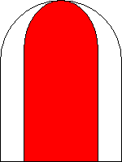

Signalbuch-Online
Signal Ra 12 (DS 301) / So 12 (DV 301)
Grenzzeichen
(1)
Bedeutung
Grenze, bis zu der bei zusammenlaufenden Gleisen das Gleis besetzt werden darf.
(2)
Beschreibung
Ein rot-weißes Zeichen.

(3)
Standort
Das Signal steht im Winkel zwischen den beiden Gleisen und zwar entweder in der Mitte zwischen den beiden Gleisen oder je ein Zeichen neben der inneren Schiene jedes Gleises.